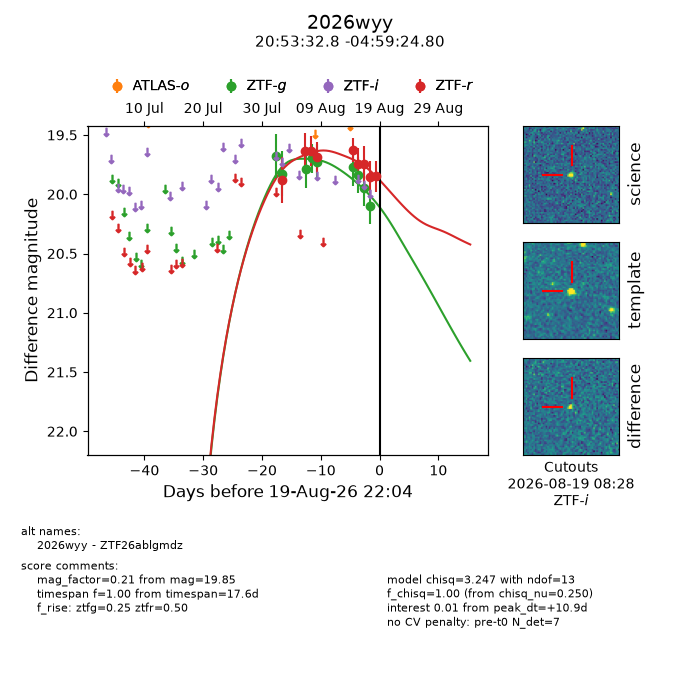
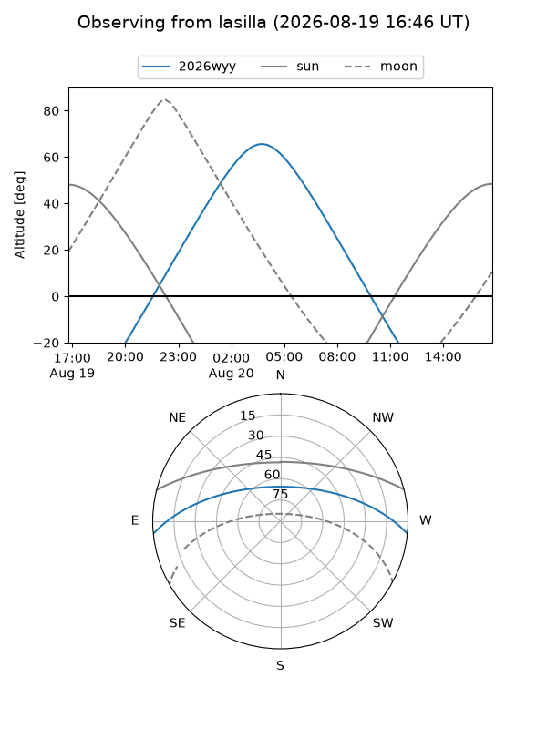
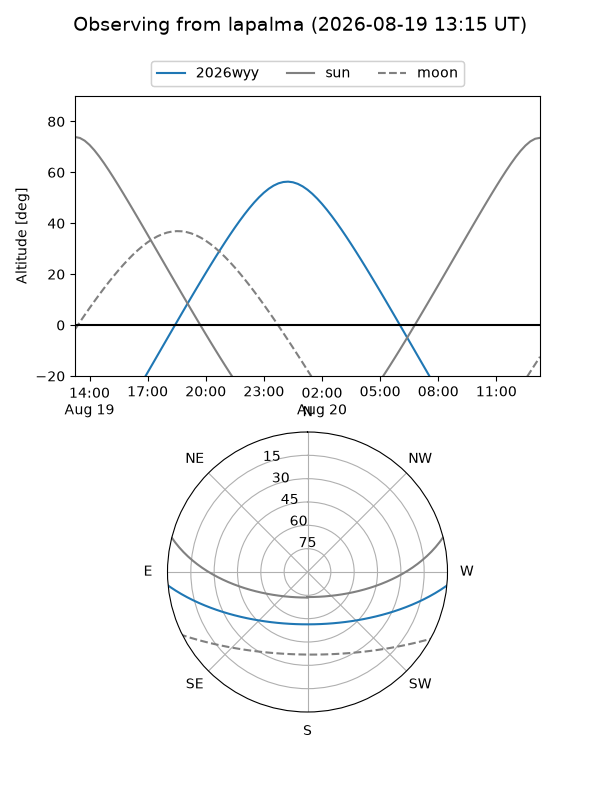
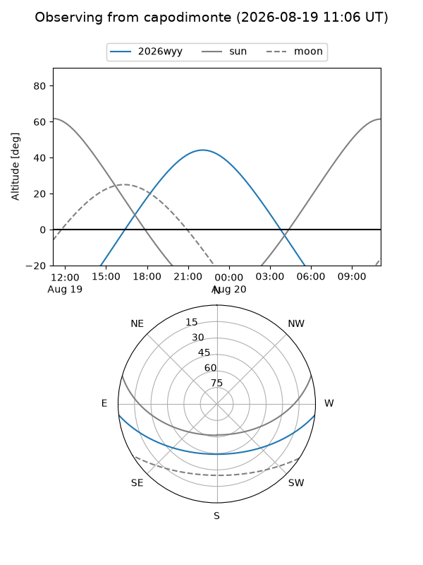

2026wyy
Target 2026wyy at 2026-08-20 10:05
Aliases and brokers:
FINK-ZTF: ztf.fink-portal.org/ZTF26ablgmdz
Lasair-ZTF: lasair-ztf.lsst.ac.uk/objects/ZTF26ablgmdz
ALeRCE-ZTF: alerce.online/object/ZTF26ablgmdz
YSE-PZ: ziggy.ucolick.org/yse/transient_detail/2026wyy
TNS name: wis-tns.org/object/2026wyy
Direct TNS query: direct search
alt names
ZTF26ablgmdz (ztf,fink_ztf)
2026wyy (tns,yse)
Coordinates:
equatorial (ra, dec) = 313.3866,-4.99022
equatorial (HMS+DMS) = 20:53:32.79,-04:59:24.80
galactic (l, b) = (43.0621,-29.34168)
Flags:
TNS type: nan
peak dt: +11.4
Photometry:
last ztfg=20.10, ztfr=19.85
9 ztfg, 9 ztfr detections
Lightcurve

Visibility



Additional plots